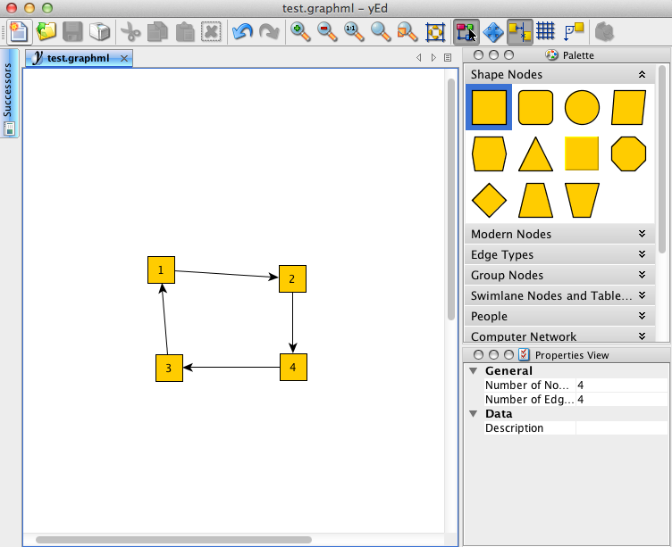

Using
Using AutoNetkit.
Note: this section assumes you have installed the "Development Alpha" using the above instructions.
Drawing a Network
- Download yEd from yWorks.
- Clicking will create a node. By default nodes are treated as routers.
- To create a link between nodes, click the mouse on the source node, and release on the destination node. AutoNetkit will ignore directional edges, so don't worry about the arrows.
An example network is shown below:
 .
- Save the diagram in graphml format, eg test.graphml.
- Run autonetkit with this input file autonetkit -f test.graphml.
You should receive output similar to the following:
sk:Desktop sk2$ autonetkit -f test.graphml INFO AutoNetkit 0.0.34 INFO Compiling Netkit for localhost INFO Rendering Network
This will create the files in the rendered folder:sk:Desktop sk2$ tree rendered/ rendered/ └── localhost └── netkit ├── 1 │ ├── etc │ │ ├── hostname │ │ ├── shadow │ │ ├── ssh │ │ │ └── sshd_config │ │ └── zebra │ │ ├── bgpd.conf │ │ ├── daemons │ │ ├── motd.txt │ │ ├── ospfd.conf │ │ └── zebra.conf │ └── root ├── 1.startup ├── 2 │ ├── etc │ │ ├── hostname │ │ ├── shadow │ │ ├── ssh │ │ │ └── sshd_config │ │ └── zebra │ │ ├── bgpd.conf │ │ ├── daemons │ │ ├── motd.txt │ │ ├── ospfd.conf │ │ └── zebra.conf │ └── root ├── 2.startup ├── 3 │ ├── etc │ │ ├── hostname │ │ ├── shadow │ │ ├── ssh │ │ │ └── sshd_config │ │ └── zebra │ │ ├── bgpd.conf │ │ ├── daemons │ │ ├── motd.txt │ │ ├── ospfd.conf │ │ └── zebra.conf │ └── root ├── 3.startup ├── 4 │ ├── etc │ │ ├── hostname │ │ ├── shadow │ │ ├── ssh │ │ │ └── sshd_config │ │ └── zebra │ │ ├── bgpd.conf │ │ ├── daemons │ │ ├── motd.txt │ │ ├── ospfd.conf │ │ └── zebra.conf │ └── root ├── 4.startup └── lab.conf
Setting up Webserver for Visualisation
-
You will need to start the webserver for AutoNetkit to connect to. This can be run as the normal user (sudo is not required).
$ ank_webserver
This will start the webserver on port 8000. You can choose a different port such as 8080:$ ank_webserver 8080
however this will require a configuration file update to specify the alternate port. - You should now be able to connect in a web browser to the site localhost:8000. A modern browser such as Chrome, Safari or Firefox should work fine. The visualisations has been tested most in Google Chrome. This will display a placeholder network topology.
- You can now run AutoNetkit, which will send the topology automatically to the webserver. Run autonetkit as before:
autonetkit -f test.graphml
You should see the webpage update to reflect your network topology. -
It is often convenient to put autonetkit into monitor mode, where it will automatically re-generate the configuration files, and update the webserver, if the input file changes. This can be done using the --monitor parameter:
autonetkit -f test.graphml --monitor
You should now be able to update the network diagram, with the visualisation automatically updated.